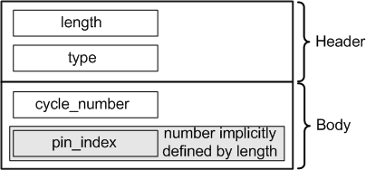

FailingCycleAttrType
Contains a list of all pins which failed in a certain cycle. The data type is DRLFailingCycleAttr.

Field Name |
Data Type |
Description |
Comments |
|---|---|---|---|
length |
int |
Attribute length |
These fields form the attribute header. |
type |
short |
Attribute type |
|
cycle_number |
double |
Cycle number where the pins failed |
|
pin_index |
short |
Pin index |
This field is included once for every failed pin. The number of pin_index fields is implicitly specified by the length field. |
Functional changes
- Introduced before SmarTest 6.3.2